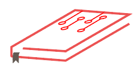

<div id="notfound" class="container">
  <div class="notfound">
    <div class="notfound-404">
      <h1>404</h1>
    </div>
    <div class="col-md-12 col-sm-3">
      <h2>Oops! Nothing was found</h2>
      <p>
        The page you are looking for might have been removed had its name
        changed or is temporarily unavailable. We are Sorry!
        <a [routerLink]="['/', 'home']">Return to Home</a>
      </p>
    </div>
    <div class="notfound-social col-md-12" *ngIf="isMobile(); else mobileImage">
      
    </div>
    <ng-template #mobileImage>
      <div class="notfound-social">
        
      </div>
    </ng-template>
  </div>
</div>
